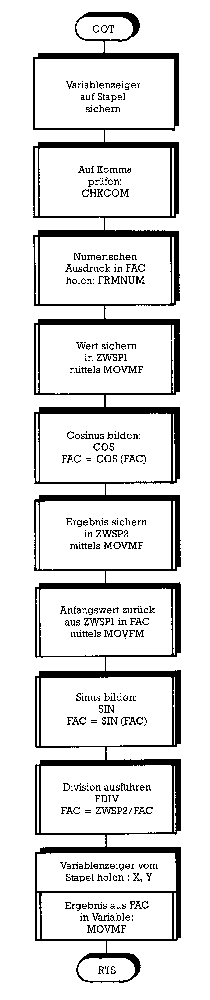
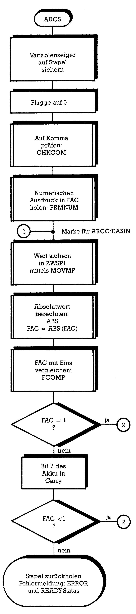
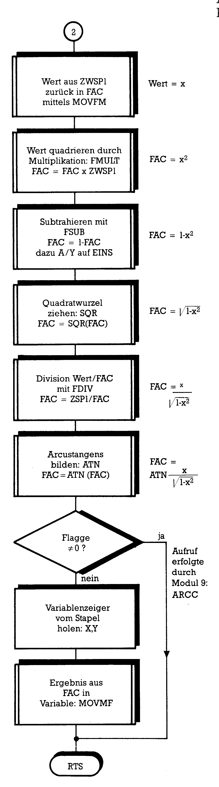
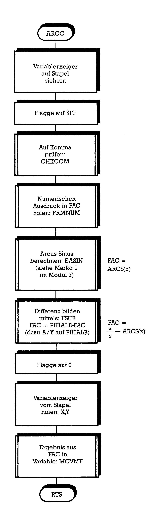
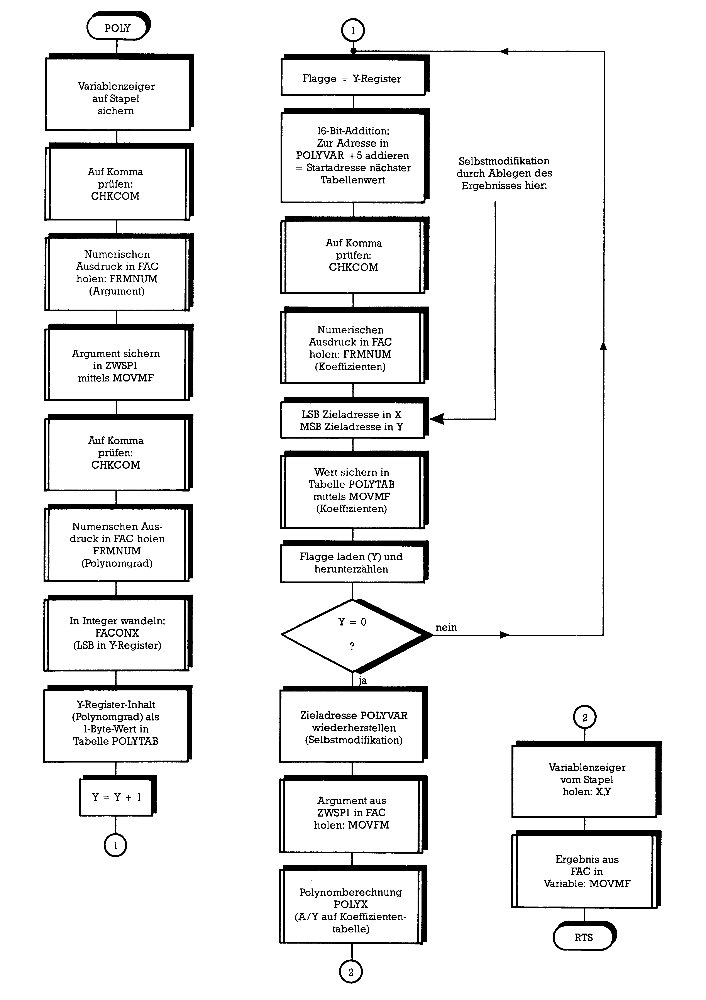

Von Basic zu Assembler (Teil 9)
Selbstmodifikation von Programmen und Programmierung einer Befehlserweiterung: Anhand einer Basic-Erweiterung erklären wir diese Techniken näher.
Ein immer noch zu wenig behandeltes Thema ist die Programmierung von selbstmodifizierenden Programmen. Dazu hatten wir in Teil 7 eine Basic-Erweiterung vorgestellt, die das Basic V2 des C 64 um neun mathematische Funktionen erweitert. In Teil 8 begannen wir damit, die einzelnen Module (Unterroutinen) dieser Erweiterung zu besprechen, wobei das letzte behandelte Unterprogramm das Modul 4 (DLGR) war. Wir wollen nun dort weitermachen, wo wir aufgehört haben, also die fehlenden Module 5 bis 9 erklären.
Modul 5: COT
Bild 1 zeigt Ihnen zum besseren Verständnis das Flußdiagramm zur Cotangens-Funktion: Wir berechnen den Cotangens nach der Formel:
cot(x) = cos(x) / sin(x).

Der im FAC gespeicherte Wert x muß also zweimal verarbeitet und die Ergebnisse dann miteinander durch Division verknüpft werden.
Dazu müssen wir den Wert x zunächst einmal zwischenspeichern. Zu diesem Zweck befinden sich direkt hinter der Tabelle mit den im letzten Teil erwähnten Fließkommakonstanten zwei weitere Zwischenspeicher, die »ZWSP1« und »ZWSP2« genannt wurden. Mittels der Routine MOVMF wird der FAC-Inhalt in den Zwischenspeicher ZWSP1 kopiert. Wie wir schon festgestellt haben, bleibt der FAC-Inhalt dabei erhalten, und wir wenden nun die COS-Funktion darauf an. Das Ergebnis befindet sich ebenfalls im FAC und wird durch den erneuten Aufruf von MOVMF in den anderen Zwischenspeicher ZWSP2 transportiert. Jetzt soll der Sinus des ursprünglichen Wertes gebildet werden. Dazu holen wir ihn mit dem Unterprogramm MOVFM aus dem ZWSP1 wieder in den FAC und benutzen die SIN-Routine. Was steht jetzt an welcher Stelle?
Im FAC steht SIN(X) und im ZWSP2 COS(X). Beide dividieren wir nun mit der Routine FDIV. Dazu brauchen wir nur einen Zeiger (MSB im Y-Register und LSB im Akku) auf den ZWSP2 richten und die Routine durch »JSR FDIV« aufzurufen. Das sollte man sich merken: Bei FDIV ist der FAC-Inhalt der Divisor und der durch den Zeiger A/Y gekennzeichnete Wert der Dividend:
FAC = (durch A/Y bezeichneter Wert) / FAC.
Das Ergebnis befindet sich dann wieder im FAC und ist der gesuchte Cotangens.
Modul 6: ACOT
Das Modul 6 berechnet die Umkehrfunktion des Cotangens nach der Formel:
acot(x) = (π/2) - atn(x).
Glücklicherweise ist der Fließkommaausdruck von π/2 schon im ROM unseres Computers fest verankert: Er steht ab Adresse $E2E0. Diese Adresse haben wir in Modul 1 PIHALB genannt. Das Bild 2 zeigt Ihnen das Flußdiagramm des ACOT-Moduls:

Das im FAC eingetroffene Argument X wird sogleich mittels »JSR ATN« zum Arcustangens verarbeitet, der ebenfalls im FAC steht (um Mißverständnisse zu vermeiden: Der alte FAC-Inhalt X wird natürlich durch den neuen FAC-Inhalt ATN(X) überschrieben). Indem wir nun wieder einen Zeiger (LSB im Akku und MSB im Y-Register) einrichten, der auf PIHALB weist, und dann die Routine FSUB benutzen, bilden wir die Differenz. Auch hier sollte man sich merken: Bei FSUB steht der Subtrahend im FAC, und der Minuend wird durch den Zeiger markiert. Der Differenzwert erscheint im FAC:
FAC = (durch A/Y bezeichneter Wert) - FAC.
Dieser Differenzwert ist schon der gesuchte Arcuscotangens.
Modul 7: ARCS
Im Modul 7 geht es uns um die Umkehrfunktion des Sinus, den Arcussinus. Die Formel dafür ist etwas komplizierter als die bisher benutzten:
arcs(x) = atn(x/sqr(1-x2)).
Zudem benötigen wir den Arcussinus auch noch später im Modul 8 zur Berechnung des Arcuscosinus. Zu dem Zweck ist im Rahmen des Moduls noch eine Speicherstelle namens FLAG berücksichtigt worden. In FLAG befindet sich der Wert 0, wenn das Modul nur den Arcussinus berechnet, aber der Wert $FF, wenn es über die Einsprungstelle EASIN vom Modul 8 aus aufgerufen wird. Das Flußdiagramm dieses Moduls finden Sie in Bild 3:

Der Modulkern speichert zunächst mit der uns schon bekannten Routine MOVMF das Argument im Zwischenspeicher 1. Falls Ihnen die weiteren Schritte suspekt vorkommen, hier die Erklärung: Sowohl der Arcussinus als auch der Arcuscosinus sind nur für Argumente x definiert, deren absoluter Wert (also deren Betrag, worunter man die Zahl x ohne Vorzeichen versteht) kleiner oder gleich 1 sind. Eine Eingabe von »ARCS,3« beispielsweise würde unweigerlich zu einem Fehler führen, denn wir erhielten eine Quadratwurzel über einem negativen Ausdruck, was eine komplexe Zahl als Argument der ATN-Funktion zur Folge hätte. Wir müssen daher vor der weiteren Verarbeitung überprüfen, ob /x/ ≦ 1 als Bedingung erfüllt ist.
Zu diesem Zweck bilden wir nach dem Zwischenspeichern den Absolutwert des eingegebenen Argumentes x, indem wir die ABS-Routine aufrufen. Danach befindet sich im FAC der Betrag von x. Wir vergleichen nun diesen FAC-Inhalt mit der Zahl 1. Der Fließkommawert von 1 findet sich gleich dreimal im ROM: Bei $B9BC, $BDE8 und $E376. Den bei $B9BC nennen wir EINS und richten einen Zeiger darauf, indem wir das LSB dieser Adresse in den Akku, das MSB ins Y-Register schreiben. Dann rufen wir die Routine FCOMP auf, die nun den FAC-Inhalt mit der Zahl vergleicht, auf die der Zeiger weist. Das Ergebnis des Vergleichs befindet sich im Akku: Er enthält 0, wenn beide gleich sind. Falls der FAC-Inhalt kleiner als die angezeigte Zahl ist, befindet sich im Akku $FF. Ist die angezeigte Zahl größer, steht im Akku eine 1.
Durch »BEQ ARGOK« verzweigen wir zur weiteren Berechnung, wenn Gleichheit festgestellt wurde, der Akku also Null enthielt. Ob $FF im Akku steht, stellen wir fest, indem wir mit ROL das Bit 7 des Akku ins Carry rotieren. Ist das Carry-Bit gesetzt, also der FAC-Inhalt kleiner als die ausgewiesene Speicherzahl, wird mit dem Befehl »BCS ARGOK« verzweigt. Ist aber nicht verzweigt worden, dann fiel das Argument x nicht in den vorgeschriebenen Rahmen. In diesem Fall holen wir den Stapelinhalt — den Zeiger FORPNT hatten wir dort ja abgelegt — und sorgen für die Ausgabe einer Fehlermeldung. Wie das geschieht und welche Meldungen zur Verfügung stehen, haben wir in der letzten Folge gesehen: Die Fehlernummer wird im X-Register abgelegt (hier entspricht $0E dem »ILLEGAL QUANTITY ERROR«) und das Programm durch »JMP ERROR« verlassen. Nach der Fehlermeldung geht der Computer in den READY-Status.
Sehen wir uns nun an, wie ab ARGOK (das kommt von »ARGument OK«) weiter verfahren wird: Zunächst holen wir das Argument wieder durch MOVFM aus dem Zwischenspeicher in den FAC. Auch bei diesem Transport handelt es sich in Wirklichkeit nur um ein Kopieren. Das machen wir uns zunutze, indem wir nun sofort FMULT aufrufen, um den FAC-Inhalt (das ist ja x) mit dem Inhalt des Zwischenspeichers 1 (auch das ist x) zu multiplizieren. Danach steht x2 im FAC. Erinnern Sie sich an FSUB und den ROM-Wert EINS? Wir können direkt danach den A/Y-Zeiger wieder auf EINS richten und FSUB aufrufen. Im FAC steht anschließend das Ergebnis der Funktion 1-x2. Die Quadratwurzel dieses Inhaltes bilden wir nun durch Aufruf der SQR-Routine: Im FAC ist dann sqr(1-x2) gespeichert. Nun richten wir noch einmal den A/Y-Zeiger auf den Zwischenspeicher 1 (dort befindet sich immer noch das Argument x), um FDIV aufzurufen. Sie erinnern sich: Der FAC ist der Divisor. Jetzt sind wir schon fast am Ziel, denn im FAC befindet sich nun schon x/sqr(1-x2). Wir benutzen noch die ATN-Routine »JSR ATN«, um nun im FAC den Arcussinus zu finden.
Den Abschluß des Kerns bildet noch die Prüfung der Speicherstelle FLAG. Wenn sich dort $FF befindet, kam der Aufruf des Moduls ja vom Arcuscosinus-Programm her, und wir müssen dorthin zurückspringen, ohne den Stapel zu leeren und das Ergebnis in die Variable zu schreiben. Durch »BNE RETOUR« überspringen wir diesen Teil des Modulrahmens, falls in FLAG ein Inhalt ungleich 0 steht.
Modul 8: ARCC
Durch die im Modul 7 geleistete Arbeit wird das Arcuscosinus-Modul recht einfach. In Bild 4 finden Sie das Flußdiagramm:

Den Arcuscosinus berechnen wir nach der Formel:
arcc(x) = (π/2) - arcs(x).
Bedingung dabei: /x/ ≦= 1 .
Im Rahmen des Moduls belegen wir zuerst die Speicherstelle FLAG mit dem Wert $FF, um in der Arcussinus-Routine eine Unterscheidung treffen zu können, wie der Aufruf erfolgte. Sofort nach dem Eintreffen des Argumentes im FAC steuern wir die Stelle EASIN im Modul 7 an. Nach der Rückkehr aus diesem Modul enthält der FAC den Arcussinus von x. Wir brauchen nun nur noch den Zeiger A/Y auf die vorhin schon benutzte ROM-Zahl PIHALB zu richten und FSUB aufzurufen, um schließlich den Arcuscosinus im FAC zu haben.
Modul 9: POLY
Im POLY-Modul kommt es uns nicht darauf an, Rechnungen durchzuführen. Vielmehr erschöpft sich die Arbeit in der richtigen Übernahme aller Parameter. Sehen wir uns zunächst einmal an, welche Werte die von uns benutzte Routine POLYX erwartet. Ein Polynom ist ein mathematischer Ausdruck der Form
y = an · xn + an-1 · xn-1 + ... + a2 · x2 + a1 · x + a0
Einige Beispiele sollen das erläutern:
y = 5 · x3 - 2 · x + 7 mit n = 3, a3 = 5, a2 = 0, a1 = -2 und a0 = 7
y = 3.7 · x12 - 5 · x4 mit n = 12, a12 = 3.7, a4 = -5,
alle anderen a-Werte (man nennt diese Werte Koeffizienten) sind gleich 0.
Sie sehen, es gibt unzählige Varianten. Außerdem können die Koeffizienten auch noch alle möglichen mathematischen Ausdrücke darstellen. POLYX erwartet nun vor dem Aufruf die Startadresse einer Tabelle im schon bekannten Zeiger A/Y. Der Aufbau dieser Tabelle sieht so aus:
1.Byte: Polynomgrad n (1-Byte-Integer)
Bytes 2 bis 6: Koeffizient an (Fließkommazahl im MFLPT-Format)
Bytes 7 bis 11: Koeffizient an-1 (Fließkommazahl im MFLPT-Format)
Bytes 12 bis 16: Koeffizient an-2 (Fließkommazahl im MFLPT-Format)
und so weiter bis zum Koeffizienten a0.
Der Aufruf soll in dieser Form erfolgen:
POLYX,x,n,an,an-1,...,a0
Im ersten oben genannten Beispiel stünde dann:
A = A:POLY,x,3,5,0,-2,7: PRINT A
Unser Modulkern speichert also zunächst die Zahl x (das Argument) mit der schon bekannten Routine MOVMF aus dem FAC in den Zwischenspeicher 1. Nun holt sich das Programm nach erneutem Prüfen auf ein Komma wieder durch FRMNUM den Polynomgrad n in den FAC. Mit der Routine FACINX wandeln wir den Fließkommawert von n um in eine 2-Byte-Integer-Zahl, deren LSB im Y-Register und deren MSB im Akku landet. Uns reicht das LSB, denn Polynome mit einem Grad größer 255 sind wohl kaum sinnvoll und lassen sich auch nicht mehr eingeben.
Die für POLYX reservierte Tabelle haben wir ans Ende des letzten Moduls gelegt und POLYTAB genannt. Den 1-Byte-Integerwert aus dem Y-Register schreiben wir durch »STY POLYTAB« dort hinein. Diesen Wert verwenden wir in der folgenden Einleseschleife auch als Zähler, denn wir haben genau n+1 Koeffizienten in die Tabelle zu schreiben. Mit INY erhöhen wir also den Zähler um 1 und legen ihn in der Speicherstelle FLAG ab: Durch die nachfolgenden Interpreter-Routinen wird nämlich das Y-Register verändert.
Im ersten Modul hatten wir eine Speicherstelle POLYVAR definiert, die POLYTAB-4 entsprach. Diese Speicherstelle spielt in der folgenden Einleseschleife eine wichtige Rolle. Sie ist die Zieladresse, die über das X- und das Y-Register an die Transportroutine MOVMF gegeben wird. Die beiden entsprechenden Zeilen im Programm sind durch »M1« und »M2« markiert. Am Anfang der Schleife (nach der Marke »m0«) addieren wir zu POLYVAR (und zwar dem Wert, der in den Speicherstellen M1+1 und M2+1 steht) in einer 16-Bit-Addition die Zahl 5: Jede MFLPT-Zahl nimmt 5 Byte für sich in Anspruch. Das Ergebnis dieser Addition (Selbstmodifikation!) wandert zurück in die Speicherstellen M1+1 und M2+1. Nach dieser Addition lesen wir den jeweils nächsten Koeffizienten in den FAC und transferieren ihn mit MOVMF an die jeweils durch den neuen POLYVAR-Wert ausgewiesenen Tabellenplatz. Danach laden wir wieder FLAG, dekrementieren diesen Zähler um 1 und prüfen mit BNE, ob noch weitere Koeffizienten zu laden sind.
Sind alle Koeffizienten durch diese Schleife in der Tabelle gelandet, greifen wir nochmals zur Selbstmodifikation, indem wir in M1+1 und M2+1 wieder den Originalwert von POLYVAR eintragen. Die Tabelle ist nun komplett. Wir holen das Argument x durch MOVFM wieder aus dem Zwischenspeicher 1 in den FAC, richten nun — wie vorhin besprochen — den Zeiger A/Y auf die Tabelle und rufen die Routine POLYX auf. Im FAC befindet sich das Ergebnis, das wir in unseren Erklärungen mit y bezeichnet haben. Ein Flußdiagramm dieses Moduls finden Sie in Bild 5.

Tabellenmodul
Noch ein paar Worte sollen zum Tabellenmodul gesagt werden. Sowohl in der Sprung- als auch in der Befehlstext-Tabelle ist noch Platz für etwa acht weitere neue Basic-Befehle. Die Polynomtabelle ab POLYTAB ist auf den Polynomgrad 16 vorbereitet. Selten dürften mehr Koeffizienten nötig sein. Falls aber doch: Diese Tabelle liegt am Programmende (und sollte dort auch nach Programmerweiterungen liegen), wodurch sich ohne Probleme noch beliebig viele Koeffizienten anschließen lassen.
Mit diesen recht ausführlichen Erklärungen des bisher umfangreichsten Beispielprogrammes sollten Sie nun in der Lage sein, auch selbst Basic-Befehlserweiterungen zu schreiben und die wichtigsten Interpreter-Routinen mathematischer Aufgabenstellungen zu verwenden. Sie haben es sicherlich bemerkt: Die Fließkommazahlen und ihre unterschiedlichen Formate im Computer spielen bei allen diesen Routinen eine wichtige Rolle. Bei nahezu allen Rechenoperationen (auch bei solchen, die mit Zahlen operieren, die in Basic als Integers definiert sind, wie A%) arbeitet der Interpreter mit Fließkommazahlen. In der nächsten Folge werden wir uns diesen Zahlen und ihrer Darstellung widmen.
(Heimo Ponnath/dm)